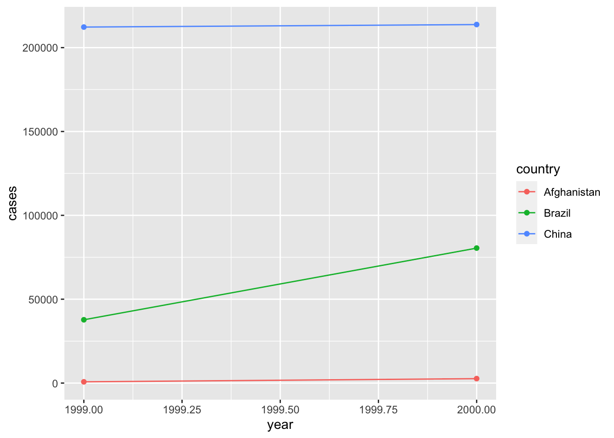

Chapter 13 Tidy data
一个好的数据集应该：变量在列中，观察结果在行中，值储存在单元格中；不整洁的数据，我们可以用 tidyr 包中的 pivot_longer() 和 pivot_wider() 辅助修正
library(tidyverse)13.1 对 table1 数据分析
table1 数据集中 cases 为增长人数（单位：万）。这份数据展现得很不错，我们可以轻松绘制想要的图像。
table1
#> # A tibble: 6 × 4
#> country year cases population
#> <chr> <int> <int> <int>
#> 1 Afghanistan 1999 745 19987071
#> 2 Afghanistan 2000 2666 20595360
#> 3 Brazil 1999 37737 172006362
#> 4 Brazil 2000 80488 174504898
#> 5 China 1999 212258 1272915272
#> 6 China 2000 213766 1280428583
ggplot(table1, aes(year, cases)) +
geom_line(aes(group = country, colour = country)) +
geom_point(aes(colour = country))
13.2 对 table2 数据整理
行中不应该出现将 cases 和 population 放在一起的现象。它们应该作为筛选变量，方便后续对 “新增” “目前总人数” 这个两个变量进行分析，即 type 拆分为列，count 跟随到新列：
table2
#> # A tibble: 12 × 4
#> country year type count
#> <chr> <int> <chr> <int>
#> 1 Afghanistan 1999 cases 745
#> 2 Afghanistan 1999 population 19987071
#> 3 Afghanistan 2000 cases 2666
#> 4 Afghanistan 2000 population 20595360
#> 5 Brazil 1999 cases 37737
#> 6 Brazil 1999 population 172006362
#> 7 Brazil 2000 cases 80488
#> 8 Brazil 2000 population 174504898
#> 9 China 1999 cases 212258
#> 10 China 1999 population 1272915272
#> 11 China 2000 cases 213766
#> 12 China 2000 population 1280428583
table2 %>%
pivot_wider(names_from = type, values_from = count)
#> # A tibble: 6 × 4
#> country year cases population
#> <chr> <int> <int> <int>
#> 1 Afghanistan 1999 745 19987071
#> 2 Afghanistan 2000 2666 20595360
#> 3 Brazil 1999 37737 172006362
#> 4 Brazil 2000 80488 174504898
#> 5 China 1999 212258 1272915272
#> 6 China 2000 213766 128042858313.3 对 table3 数据整理
行中不应该出现将 cases 和 population 放在一起的现象，需要手动拆分：
table3
#> # A tibble: 6 × 3
#> country year rate
#> * <chr> <int> <chr>
#> 1 Afghanistan 1999 745/19987071
#> 2 Afghanistan 2000 2666/20595360
#> 3 Brazil 1999 37737/172006362
#> 4 Brazil 2000 80488/174504898
#> 5 China 1999 212258/1272915272
#> 6 China 2000 213766/1280428583
# 默认情况下，将在看到非字母数字字符（即不是数字或字母的字符）的位置拆分值
table3 %>%
separate(rate, into = c("cases", "population"))
#> # A tibble: 6 × 4
#> country year cases population
#> <chr> <int> <chr> <chr>
#> 1 Afghanistan 1999 745 19987071
#> 2 Afghanistan 2000 2666 20595360
#> 3 Brazil 1999 37737 172006362
#> 4 Brazil 2000 80488 174504898
#> 5 China 1999 212258 1272915272
#> 6 China 2000 213766 1280428583
# convert 可以自动将数据的格式进行转化。如这里的 cases 和 population 都应该是 int 类型数据
table3 %>%
separate(rate, into = c("cases", "population"), convert = TRUE)
#> # A tibble: 6 × 4
#> country year cases population
#> <chr> <int> <int> <int>
#> 1 Afghanistan 1999 745 19987071
#> 2 Afghanistan 2000 2666 20595360
#> 3 Brazil 1999 37737 172006362
#> 4 Brazil 2000 80488 174504898
#> 5 China 1999 212258 1272915272
#> 6 China 2000 213766 1280428583
# 分隔符也可以手动设置
table3 %>%
separate(rate, into = c("cases", "population"), sep = "/")
#> # A tibble: 6 × 4
#> country year cases population
#> <chr> <int> <chr> <chr>
#> 1 Afghanistan 1999 745 19987071
#> 2 Afghanistan 2000 2666 20595360
#> 3 Brazil 1999 37737 172006362
#> 4 Brazil 2000 80488 174504898
#> 5 China 1999 212258 1272915272
#> 6 China 2000 213766 1280428583
# 设置为数字表示分割位置，如这里分割为世纪 + 两位数年
table3 %>%
separate(year, into = c("century", "year"), sep = 2)
#> # A tibble: 6 × 4
#> country century year rate
#> <chr> <chr> <chr> <chr>
#> 1 Afghanistan 19 99 745/19987071
#> 2 Afghanistan 20 00 2666/20595360
#> 3 Brazil 19 99 37737/172006362
#> 4 Brazil 20 00 80488/174504898
#> 5 China 19 99 212258/1272915272
#> 6 China 20 00 213766/128042858313.4 对 table4a & table4b 数据整理
列中不应该出现将 1999 和 2000 分开的现象。它们应该作为筛选变量，方便后续对 “年份” 这个总变量进行分析，即旧变量合并为 year，值合并为 cases：
table4a_new <- table4a %>%
pivot_longer(
c(`1999`, `2000`), # 指定修改列。注意这里变量是以数字开头，所以有必要用 `` 引用（当然数字开头是不规范的）
names_to = "year", # 上述变量名汇总到 year 上
values_to = "cases" # 上述对应数值汇总到 cases 上
)
table4b_new <- table4b %>%
pivot_longer(
c(`1999`, `2000`),
names_to = "year",
values_to = "population"
)
# 最后合并两个表的数据内容
#* dplyr::left_join()
left_join(table4a_new, table4b_new)
#> Joining, by = c("country", "year")
#> # A tibble: 6 × 4
#> country year cases population
#> <chr> <chr> <int> <int>
#> 1 Afghanistan 1999 745 19987071
#> 2 Afghanistan 2000 2666 20595360
#> 3 Brazil 1999 37737 172006362
#> 4 Brazil 2000 80488 174504898
#> 5 China 1999 212258 1272915272
#> 6 China 2000 213766 128042858313.5 对 table5 数据整理
我们需要手动拆分 cases 和 population 同时要将年份数据进行合并：
table5 %>%
# 注意如果不声明 sep，默认加间隔符号 “_”！
unite(year_4cs, century, year, sep = "", na.rm = TRUE) %>%
separate(rate, into = c("cases", "population"), sep = "/")
#> # A tibble: 6 × 4
#> country year_4cs cases population
#> <chr> <chr> <chr> <chr>
#> 1 Afghanistan 1999 745 19987071
#> 2 Afghanistan 2000 2666 20595360
#> 3 Brazil 1999 37737 172006362
#> 4 Brazil 2000 80488 174504898
#> 5 China 1999 212258 1272915272
#> 6 China 2000 213766 128042858313.6 对 stocks 和 treatment 的缺失数据处理
stocks <- tibble(
year = c(2015, 2015, 2015, 2015, 2016, 2016, 2016),
qtr = c(1, 2, 3, 4, 2, 3, 4),
return = c(1.88, 0.59, 0.35, NA, 0.92, 0.17, 2.66)
)
new_stocks <- stocks %>%
# 拆分成按年作列
pivot_wider(names_from = year, values_from = return) %>%
# 重新整理回去。注意表格是怎么整理的
pivot_longer(
cols = c(`2015`, `2016`),
names_to = "year",
values_to = "return",
values_drop_na = TRUE # 这会对含 NA 的数据行剔除隐藏
) %>%
print()
#> # A tibble: 6 × 3
#> qtr year return
#> <dbl> <chr> <dbl>
#> 1 1 2015 1.88
#> 2 2 2015 0.59
#> 3 2 2016 0.92
#> 4 3 2015 0.35
#> 5 3 2016 0.17
#> 6 4 2016 2.66
new_stocks %>%
complete(year, qtr) # 这会把所有隐藏的 NA 数据重新找回
#> # A tibble: 8 × 3
#> year qtr return
#> <chr> <dbl> <dbl>
#> 1 2015 1 1.88
#> 2 2015 2 0.59
#> 3 2015 3 0.35
#> 4 2015 4 NA
#> 5 2016 1 NA
#> 6 2016 2 0.92
#> 7 2016 3 0.17
#> 8 2016 4 2.66
treatment <- tribble(
~person, ~treatment, ~response,
"Derrick Whitmore", 1, 7,
NA, 2, 10,
NA, 3, 9,
"Katherine Burke", 1, 4
)
treatment %>%
fill(person) # 对 treatment 的 person 列进行补全处理，碰到 NA 时会将 NA 改为上一个不是 NA 的数据
#> # A tibble: 4 × 3
#> person treatment response
#> <chr> <dbl> <dbl>
#> 1 Derrick Whitmore 1 7
#> 2 Derrick Whitmore 2 10
#> 3 Derrick Whitmore 3 9
#> 4 Katherine Burke 1 413.7 对 who 数据整理
who 是一个流行病统计数据集。
who
#> # A tibble: 7,240 × 60
#> country iso2 iso3 year new_sp_m014 new_sp_m1524 new_sp_m2534 new_sp_m3544
#> <chr> <chr> <chr> <int> <int> <int> <int> <int>
#> 1 Afghani… AF AFG 1980 NA NA NA NA
#> 2 Afghani… AF AFG 1981 NA NA NA NA
#> 3 Afghani… AF AFG 1982 NA NA NA NA
#> 4 Afghani… AF AFG 1983 NA NA NA NA
#> 5 Afghani… AF AFG 1984 NA NA NA NA
#> 6 Afghani… AF AFG 1985 NA NA NA NA
#> 7 Afghani… AF AFG 1986 NA NA NA NA
#> 8 Afghani… AF AFG 1987 NA NA NA NA
#> 9 Afghani… AF AFG 1988 NA NA NA NA
#> 10 Afghani… AF AFG 1989 NA NA NA NA
#> # … with 7,230 more rows, and 52 more variables: new_sp_m4554 <int>,
#> # new_sp_m5564 <int>, new_sp_m65 <int>, new_sp_f014 <int>,
#> # new_sp_f1524 <int>, new_sp_f2534 <int>, new_sp_f3544 <int>,
#> # new_sp_f4554 <int>, new_sp_f5564 <int>, new_sp_f65 <int>,
#> # new_sn_m014 <int>, new_sn_m1524 <int>, new_sn_m2534 <int>,
#> # new_sn_m3544 <int>, new_sn_m4554 <int>, new_sn_m5564 <int>,
#> # new_sn_m65 <int>, new_sn_f014 <int>, new_sn_f1524 <int>, …
who1 <- who %>%
pivot_longer(
cols = new_sp_m014:newrel_f65, # 将病症的种类转换成变量（key）
names_to = "key",
values_to = "cases", # 将数据转换成 cases 列
values_drop_na = TRUE # 删除 NA 数据
)
who1
#> # A tibble: 76,046 × 6
#> country iso2 iso3 year key cases
#> <chr> <chr> <chr> <int> <chr> <int>
#> 1 Afghanistan AF AFG 1997 new_sp_m014 0
#> 2 Afghanistan AF AFG 1997 new_sp_m1524 10
#> 3 Afghanistan AF AFG 1997 new_sp_m2534 6
#> 4 Afghanistan AF AFG 1997 new_sp_m3544 3
#> 5 Afghanistan AF AFG 1997 new_sp_m4554 5
#> 6 Afghanistan AF AFG 1997 new_sp_m5564 2
#> 7 Afghanistan AF AFG 1997 new_sp_m65 0
#> 8 Afghanistan AF AFG 1997 new_sp_f014 5
#> 9 Afghanistan AF AFG 1997 new_sp_f1524 38
#> 10 Afghanistan AF AFG 1997 new_sp_f2534 36
#> # … with 76,036 more rows
count(who1, key, sort = TRUE) # 对不同病症人数统计
#> # A tibble: 56 × 2
#> key n
#> <chr> <int>
#> 1 new_sp_m4554 3223
#> 2 new_sp_m3544 3219
#> 3 new_sp_m5564 3218
#> 4 new_sp_m1524 3209
#> 5 new_sp_m65 3209
#> 6 new_sp_m2534 3206
#> 7 new_sp_f4554 3204
#> 8 new_sp_f2534 3200
#> 9 new_sp_f3544 3199
#> 10 new_sp_f65 3197
#> # … with 46 more rows对病症名称进行分析得知：
前三个字母：是否包含新的或旧的结核病例
中间两个字母：结核病的类型
- rel：复发病例
- ep：肺外结核病例
- sn：无法通过肺涂片诊断的肺结核病例（涂片阴性）
- sp：可通过肺涂片诊断的肺结核病例（涂片阳性）
第六个字母：结核病患者的性别。其中 m 为男性，f 为女性
最后的数字：年龄组
- 014：0 ~ 14 岁
- 1524：15 ~ 24 岁
- 2534：25 ~ 34 岁
- 3544：35 ~ 44 岁
- 4554：45 ~ 54 岁
- 5564：55 ~ 64岁
- 65：65 岁或以上
who2 <- who1 %>%
# 使用 stringr 的 str_replace 可以进行简单的替换（当然切割时使用位置切割也可以）
mutate(key = stringr::str_replace(key, "newrel", "new_rel")) %>%
# 通过字符串 “_” 分割为是否包含新病例、结核病类型和性别年龄
separate(key, c("new", "type", "sexage"), sep = "_") %>%
# 通过位置继续分割性别和年龄
separate(sexage, c("sex", "age"), sep = 1)
who2
#> # A tibble: 76,046 × 9
#> country iso2 iso3 year new type sex age cases
#> <chr> <chr> <chr> <int> <chr> <chr> <chr> <chr> <int>
#> 1 Afghanistan AF AFG 1997 new sp m 014 0
#> 2 Afghanistan AF AFG 1997 new sp m 1524 10
#> 3 Afghanistan AF AFG 1997 new sp m 2534 6
#> 4 Afghanistan AF AFG 1997 new sp m 3544 3
#> 5 Afghanistan AF AFG 1997 new sp m 4554 5
#> 6 Afghanistan AF AFG 1997 new sp m 5564 2
#> 7 Afghanistan AF AFG 1997 new sp m 65 0
#> 8 Afghanistan AF AFG 1997 new sp f 014 5
#> 9 Afghanistan AF AFG 1997 new sp f 1524 38
#> 10 Afghanistan AF AFG 1997 new sp f 2534 36
#> # … with 76,036 more rows深度观察，我们会发现数据还有进一步的优化空间：
count(who2, new) # 可以发现这个数据集的 “是否包含新病例” 值其实全部都是 “new”，所以是不必要的数据
#> # A tibble: 1 × 2
#> new n
#> <chr> <int>
#> 1 new 76046
# 同时 “iso2” 和 “iso3” 是国家缩写，也是不需要的数据
who3 <- who2 %>%
select(-new, -iso2, -iso3)
who3
#> # A tibble: 76,046 × 6
#> country year type sex age cases
#> <chr> <int> <chr> <chr> <chr> <int>
#> 1 Afghanistan 1997 sp m 014 0
#> 2 Afghanistan 1997 sp m 1524 10
#> 3 Afghanistan 1997 sp m 2534 6
#> 4 Afghanistan 1997 sp m 3544 3
#> 5 Afghanistan 1997 sp m 4554 5
#> 6 Afghanistan 1997 sp m 5564 2
#> 7 Afghanistan 1997 sp m 65 0
#> 8 Afghanistan 1997 sp f 014 5
#> 9 Afghanistan 1997 sp f 1524 38
#> 10 Afghanistan 1997 sp f 2534 36
#> # … with 76,036 more rows